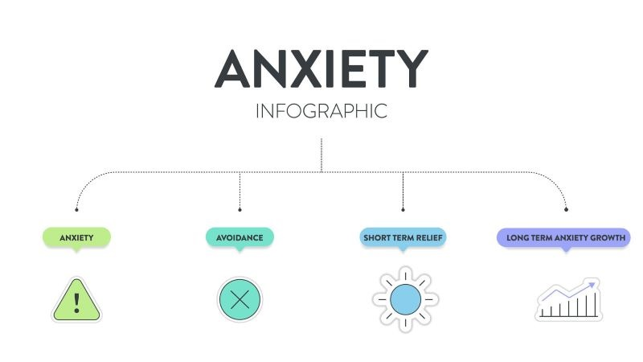
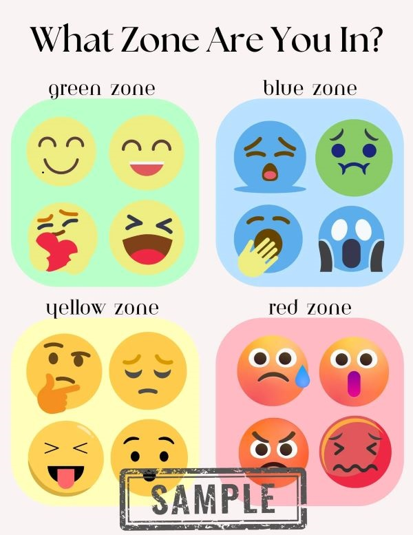
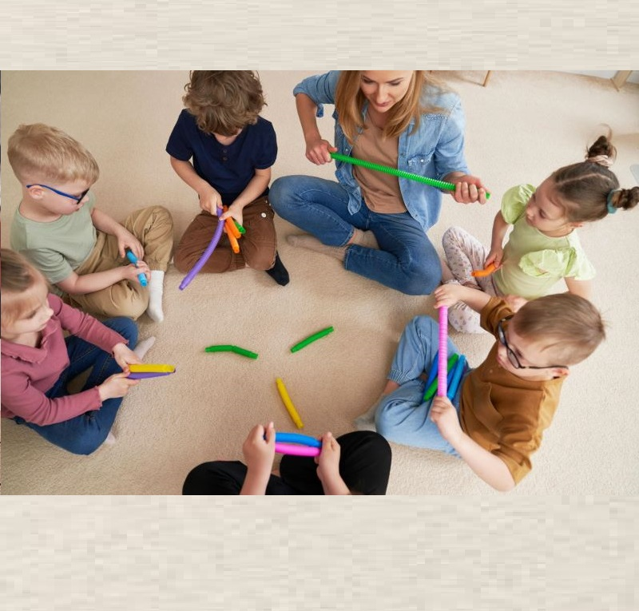
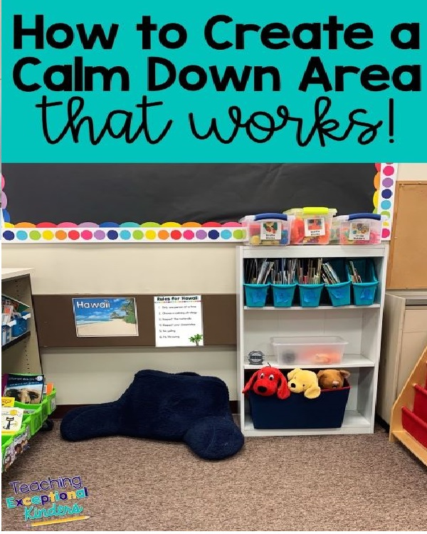
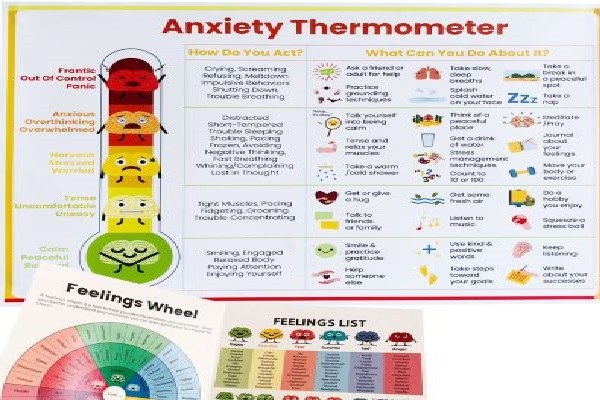
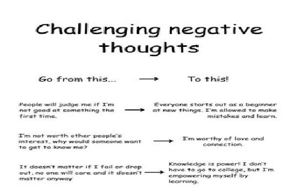
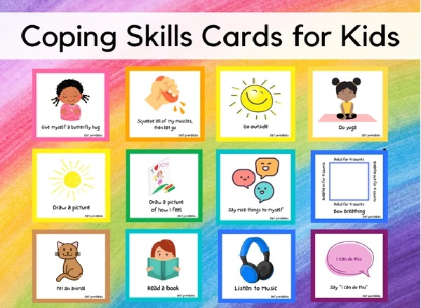
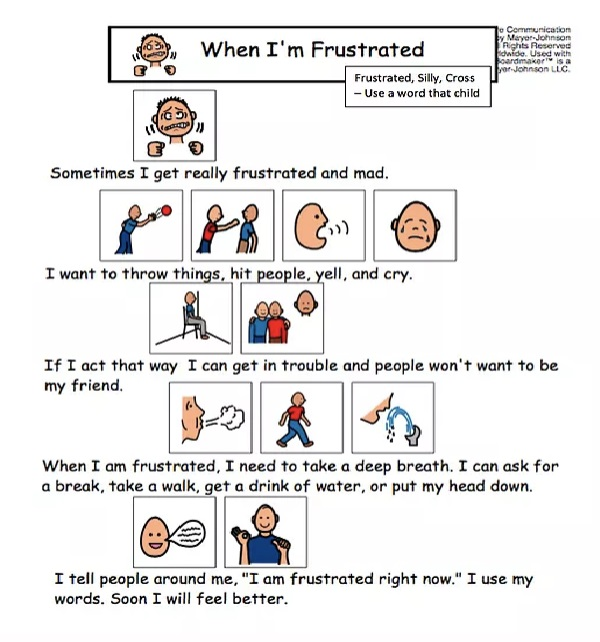
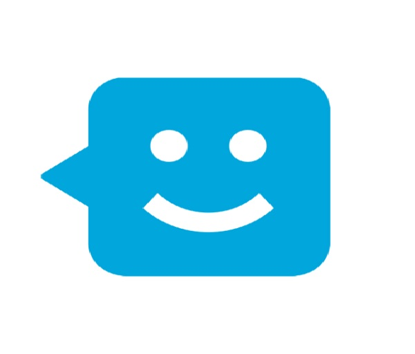

Purpose Of This Tool Kit
This toolkit was developed to provide practical, evidence-based prevention and intervention strategies to support youth ages 8–14 experiencing anxiety and emotional dysregulation. Anxiety is one of the most common mental health concerns among children and adolescents and often presents through avoidance, irritability, somatic complaints, emotional outbursts, or school refusal (American Academy of Child & Adolescent Psychiatry [AACAP], 2022).
The aim of this toolkit is to:
This toolkit aims to promote emotional regulation and resilience, identify early warning signs of anxiety escalation, provide de-escalation strategies before a crisis occurs, support positive behaviour management, and connect families to community and professional resources. It integrates prevention strategies, crisis intervention planning, behaviour management tools, and resilience-building activities to offer comprehensive support for youth ages 8–14.
TOOLKIT INDEX PAGE
Understanding Anxiety in Youth
Prevention & Resilience Building
Emotional Regulation Tools
Early Warning Signs & Crisis Planning
De-escalation Techniques
Behaviour Management Strategie
Social & Cognitive Coping Skills
Parent Support Resources
Community & Professional Supports
Tools ( 1 - 9 )

TOOL 1
Youth Anxiety Fact Sheet
Purpose & Use : To educate caregivers and youth about how anxiety affects the brain and body
- Review with child to normalize anxiety
- Teach fight-flight-freeze response
- Reduce stigma and self-blame

TOOL 2
Zones of Regulation Chart
Purpose & Use : To build emotional awareness and self-monitoring skills (Kuypers, 2011).
- Youth identify their emotional “zone”
- Select coping strategy before escalation
- Used daily at school or home

Tool 3
5-4-3-2-1 Grounding Exercise
Purpose & Use : To interrupt panic or heightened anxiety.
- 5 things you see
- 4 things you feel
- 3 things you hear
- 2 things you smell
- 1 thing you taste

Tool 4
Calm Down Corner Guide
Purpose & Use : Prevention strategy to reduce escalation.
- Breathing cards
- Stress ball
- Visual coping menu
- Timer

Tool 5
Early Warning Signs & Escalation Cycle

Tool 6
Cognitive Coping Thought Record (CBT Tool)
Purpose & Use : Teach youth to challenge anxious thinking.
- Identify anxious thought
- Identify evidence for/against
- Replace with balanced thought

Tool 7
Positive Reinforcement Behaviour Plan
Purpose & Use : Encourage use of coping skills through reinforcement.
- Using coping tools
- Asking for help
- Completing exposure task

Tool 8
Social Story for School Anxiety
Purpose & Use : Prepare youth for anxiety-triggering situations..
- School presentations
- Transitions
- New environments

Tool 9
Community & Professional Supports (Canada)
Purpose : Ensure families access formal and informal supports.
- CMHA
- Kids Help Phone
- School mental health services
References
American Academy of Child & Adolescent Psychiatry. (2022). Anxiety disorders in children and adolescents. https://www.aacap.org/AACAP/Families_and_Youth/Facts_for_Families/FFF-Guide/Anxiety-Disorders-047.aspx
Harvard Health Publishing. (n.d.). Fight, flight, or freeze response. https://www.health.harvard.edu/mindscape/for-young-people/brain-body-connection/fight-flight-or-freeze
Healthline. (n.d.). Grounding techniques to calm anxiety. https://www.healthline.com/health/grounding-techniques
Kendall, P. C. (2011). Cognitive-behavioral therapy for anxious children: Therapist manual. Guilford Press.
Kuypers, L. M. (2011). The zones of regulation: A curriculum designed to foster self-regulation and emotional control. Social Thinking Publishing.
Magnet ABA Therapy. (n.d.). Understanding token economies in ABA therapy. https://www.magnetaba.com/blog/understanding-token-economies-in-aba-therapy
Therapist Aid LLC. (n.d.). Thought record worksheet. https://www.therapistaid.com/therapy-worksheet/thought-record